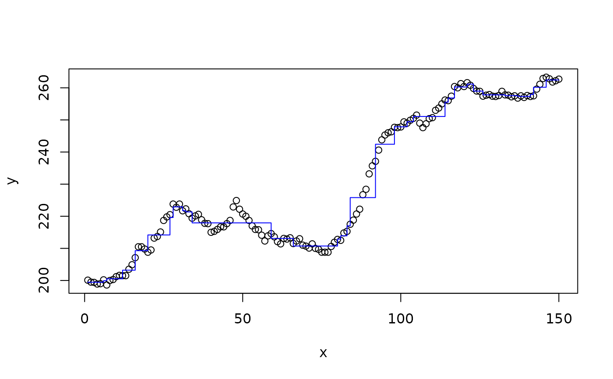

Generates random features from a BART prior on symmetric trees. Equivalently, the features are the interaction of a small number of indicator functions. The number of interacted indicators is the depth of the symmetric tree, and is drawn from a prior on the tree depth which is calibrated to match the traditional BART prior of Chipman et al. (2010). The variable at each tree node is selected uniformly, and thresholds are selected uniformly from the range of each variable.
Usage
b_bart(
...,
trees = 100,
depths = bart_depth_prior()(trees),
vars = NULL,
thresh = NULL,
drop = NULL,
ranges = NULL
)
bart_depth_prior(mean_depth = 1.25)Arguments
- ...
The variable(s) to build features for. A single data frame or matrix may be provided as well. Missing values are not allowed.
- trees
The number of trees to sample.
- depths
The depths of each tree. By default, these are drawn from a Poisson distribution calibrated to produce trees with around 2.5 leaves, on average, matching the traditional BART prior.
- vars
Integer indices of the variables to use for each tree. If provided, overrides those generated automatically by sampling uniformly from the available input features. Provided in flat form, so should have length equal to
sum(depths).- thresh
The thresholds for each variable. If provided, overrides those generated automatically by sampling uniformly from
ranges, which defaults to the range of each input feature. Provided in flat form, so should have length equal tosum(depths).- drop
Columns in the calculated indicator matrix to drop. By default, any leaves which match zero input rows are dropped. If provided, overrides this default.
- ranges
The range of the input features, provided as a matrix with two rows and a column for each input feature. The first row is the minimum and the second row is the maximum.
- mean_depth
The mean prior depth of each tree, where a single node has depth zero and a two-leaf tree has depth 1. This value minus one becomes the rate parameter of a Poisson distribution, whose samples are then shifted up by one. In this way, no zero-depth trees (which produce trivial features) are sampled.
Functions
bart_depth_prior(): Poisson depth prior for random trees, parametrized in terms of mean tree depth. Returns a function which generates samples from the prior with argument giving the number of samples. The default prior closely matches the average number of leaves in the original (asymmetric) BART prior.
References
Hugh A. Chipman. Edward I. George. Robert E. McCulloch. "BART: Bayesian additive regression trees." Ann. Appl. Stat. 4 (1) 266 - 298, March 2010. https://doi.org/10.1214/09-AOAS285
Examples
X = with(mtcars, b_bart(cyl, disp, hp, drat, wt, trees = 50))
all(colSums(X) > 0) # TRUE; empty leaves are pruned away
#> [1] TRUE
# each row belongs to 1 leaf node per tree; some trees pruned away
all(rowSums(X) == rowSums(X)[1]) # TRUE
#> [1] TRUE
all(rowSums(X) <= 50) # TRUE
#> [1] TRUE
x = 1:150
y = as.numeric(BJsales)
m = ridge(y ~ b_bart(x, trees=25))
plot(x, y)
lines(x, fitted(m), type="s", col="blue")
